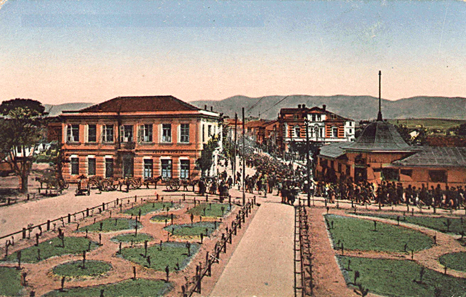
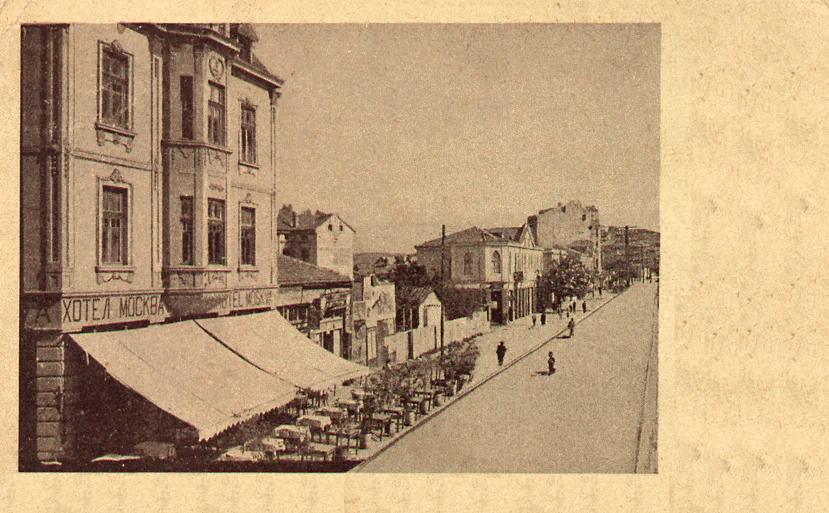
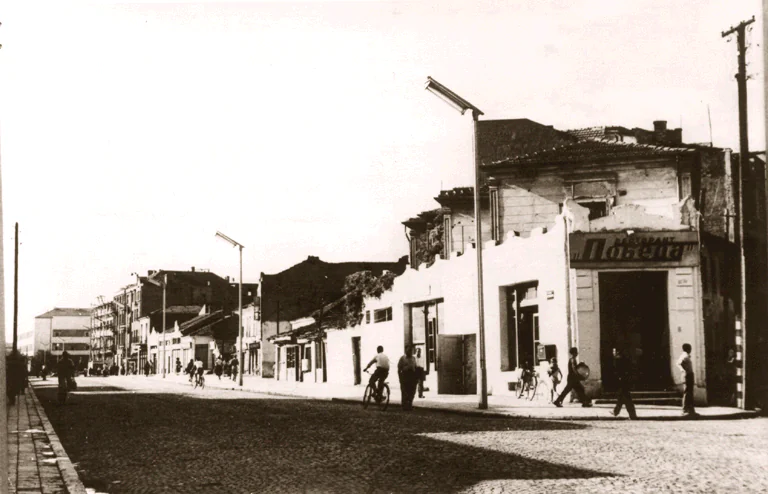
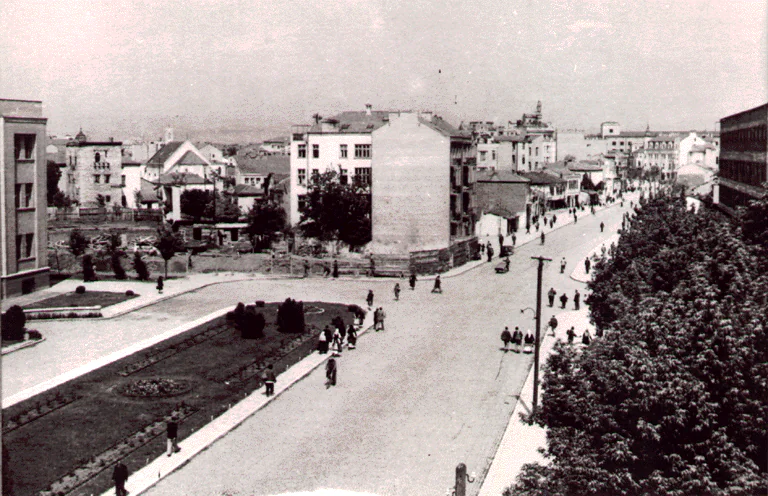
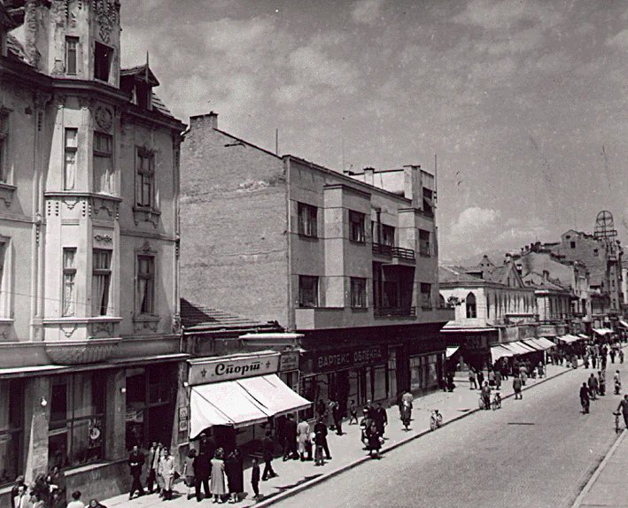
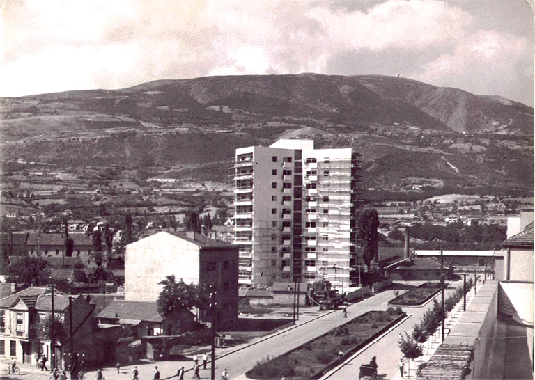

Λαχαναγορά
- Παραγωγή
- UFUŽ και Documentary Film Prague
- Σενάριο και σκηνοθεσία
- Σλάβκο Γιανέφσκι και EMAN CANERA
- Έτος
- 1959
- Διάρκεια
- 00:18

Χριστιανικά σπίτια των Σκοπίων - 1870.

Τμήμα της παλιάς αγοράς των Σκοπίων, 1902. Σειρά μαγαζιών με ρολά μπροστά στο Κουρσουμλί Χαν. Στο βάθος φαίνεται ο πύργος του Γκιουλσέν Χαμάμ.

Ο κεντρικός δρόμος κατά τη διαμόρφωσή του (σήμερα η οδός «Μακεντόνιγια», που εκτείνεται από το σημερινό Μουσείο της πόλης των Σκοπίων προς την Πέτρινη γέφυρα). Δεξιά φαίνεται η Καθολική εκκλησία σε γοτθικό ρυθμό, καθώς και μεμονωμένα κτίρια αριστερά. Το τμήμα κοντά στην Πέτρινη γέφυρα λιθοστρώθηκε το 1911, για να περάσει ο σουλτάνος Μουράτ Ε΄, που ήρθε να επισκεφθεί τα Σκόπια πριν αναχωρήσει για το Κοσσυφοπέδιο.

Η φωτογραφία τραβήχτηκε από το κτίριο του παλιού σιδηροδρομικού σταθμού - σημερινό Μουσείο της πόλης των Σκοπίων -, που χτίστηκε το 1873 την εποχή της Οθωμανικής Αυτοκρατορίας. Στο πρώτο πλάνο η πρόσβαση στον σταθμό, με περιφραγμένους χώρους πρασίνου. Ακολουθεί ο κεντρικός δρόμος που οδηγεί στην πλατεία. Στην αρχή του δρόμου αριστερά το ξενοδοχείο «Ρωσία».

Θέα προς τον κεντρικό δρόμο «Μακεντόνιγια». Η αψίδα στήθηκε προς τιμήν κάποιου σημαντικού επισκέπτη. Αριστερά της το ξενοδοχείο «Ρωσία». - αρχές του 20ού αιώνα.

Ο κεντρικός δρόμος με το ξενοδοχείο «Μόσχα» - Δεκαετία του 1920

Ο κεντρικός δρόμος, σημερινή Μακεντόνιγια, που οδηγεί από το σημερινό Μουσείο της πόλης των Σκοπίων προς την πλατεία. Στο τέλος του δρόμου φαίνεται η Λέσχη Αξιωματικών, και δεξιά της το Οικονομικό και Εμπορικό Επιμελητήριο - Δεκαετία του 1930.

Ο κεντρικός δρόμος, φωτογραφημένος προς το σημερινό Μουσείο της πόλης των Σκοπίων - περίπου 1920.

Ο κεντρικός δρόμος (σήμερα Μακεντόνιγια), από την πλατεία προς τον σιδηροδρομικό σταθμό - περίπου 1920.

Ο κεντρικός δρόμος, Μακεντόνιγια, από το σημερινό Μουσείο της πόλης των Σκοπίων προς την πλατεία. Αριστερά το ξενοδοχείο Μπρίστολ, και δεξιά φαίνεται το μέγαρο Κρανγκ. (Δεκαετία του 1930)

Ο κεντρικός δρόμος που οδηγεί από το σημερινό Μουσείο της πόλης των Σκοπίων προς την πλατεία. Φωτογραφημένος κοντά στο σημερινό ξενοδοχείο «Μπρίστολ» και το μέγαρο Κρανγκ. Στο βάθος φαίνεται η Λέσχη Αξιωματικών - περίπου 1935.

Ο κεντρικός δρόμος που οδηγεί από το σημερινό Μουσείο της πόλης των Σκοπίων προς την πλατεία. Το γωνιακό κτίριο είναι το μέγαρο Κρανγκ - Δεκαετία του 1930.

Μέγαρο Κρανγκ. - Δεκαετία του 1930.

Ο δρόμος δίπλα στην προκυμαία στη δεξιά όχθη του Βαρδάρη. - Δεκαετία του 1930

Δρόμος στο παλιό τμήμα της πόλης προς την παλιά αγορά - τέλη του 19ου αιώνα.

Ο δρόμος από την Πέτρινη γέφυρα προς την παλιά αγορά. - Δεκαετία του 1920

Δρόμος στο παλιό τμήμα της πόλης, προς τη συνοικία Τσαΐρ. Στο πρώτο πλάνο πιάτσα αμαξών και η παλιά τουρκική κρήνη. Στο βάθος κτίρια παλιάς λαϊκής αρχιτεκτονικής - Δεκαετία του 1920.

Η Πέτρινη γέφυρα προς την παλιά αγορά. Αριστερά σειρά εμπορικών μαγαζιών, και δεξιά το κτίριο του οδοντιάτρου Δρ Ρούμπεν και σειρά μαγαζιών προς την παλιά αγορά - περίπου 1935.

Η οδός «Κρούσεφσκα» στη συνοικία Πάικο, Δεκαετία του 1920.

Αυτός ο δρόμος δεν υπάρχει σήμερα. Εκτεινόταν παράλληλα με τον κεντρικό δρόμο, από την πλατεία προς τον παλιό σιδηροδρομικό σταθμό (σημερινό Μουσείο της πόλης των Σκοπίων) - Δεκαετία του 1920

Ο κεντρικός δρόμος (σήμερα «Μακεντόνιγια») - Δεκαετία του 1920.

Δρόμος της παλιάς αγοράς των Σκοπίων. Στο βάθος το Τζαμί του Μουσταφά Πασά. - Δεκαετία του 1930

Δρόμος στην παλιά αγορά των Σκοπίων. Στο βάθος φαίνεται το Τζαμί του Μουσταφά Πασά. - Δεκαετία του 1930

Η οδός «Τσβετάν Ντίμοφ» στη συνοικία Τσαΐρ, Δεκαετία του 1940. Στο βάθος φαίνεται το Τζαμί του Μεχμέτ Πασά.

Σκόπια, Δεκαετία του 1950. Η είσοδος της παλιάς αγοράς των Σκοπίων - θέση του πολυκαταστήματος «Μοστ». Στο πρώτο πλάνο μια ομάδα μαγαζιών που κατεδαφίστηκαν μετά τον σεισμό του 1963. Αριστερά φαίνεται τμήμα του φρουρίου των Σκοπίων - Καλέ. Στο βάθος το Τζαμί του Μουσταφά Πασά.

Η μικρή πλατεία στην παλιά αγορά των Σκοπίων, Δεκαετία του 1950.

Η οδός 11ης Οκτωβρίου, φωτογραφημένη από την πλατεία προς το σημερινό Κοινοβούλιο της Δ. Μακεδονίας. Στο βάθος φαίνεται το παλιό κτίριο της Διεύθυνσης Εσωτερικών Υποθέσεων. - Δεκαετία του 1950

Η οδός 11ης Οκτωβρίου με το Κοινοβούλιο της Δ. Μακεδονίας στα αριστερά. Αριστερά φαίνεται και ο μεσαιωνικός πύργος. Στο βάθος της φωτογραφίας φαίνεται τμήμα του κτιρίου του παλιού ταχυδρομείου. - τέλη της δεκαετίας του 1950

Η οδός «Γκότσε Ντέλτσεφ», φωτογραφημένη από την πλατεία. Στο πρώτο πλάνο αριστερά φαίνεται τμήμα του ξενοδοχείου «Μακεντόνιγια», που κατέρρευσε στον σεισμό του 1963. - Δεκαετία του 1950

Ο κεντρικός δρόμος προς την πλατεία. Στο πρώτο πλάνο η Καθολική εκκλησία. - Δεκαετία του 1950

Ο κεντρικός δρόμος προς τον σιδηροδρομικό σταθμό (σημερινό Μουσείο της πόλης των Σκοπίων). Στα αριστερά φαίνεται η Καθολική εκκλησία. - Δεκαετία του 1950

Ο κεντρικός δρόμος «Μακεντόνιγια», προς την πλατεία. - Δεκαετία του 1950

Σκόπια, 1950. Το δυτικό τμήμα του κεντρικού δρόμου. Στα αριστερά το ξενοδοχείο «Μόσχα».

Στο πρώτο πλάνο η διασταύρωση της οδού 11ης Οκτωβρίου με τη λεωφόρο Κότσο Ράτσιν. Δεξιά από τον πύργο, που είναι υπό κατασκευή, φαίνεται ο παλιός στρατιωτικός φούρνος από τον Α΄ Παγκόσμιο Πόλεμο - Δεκαετία του 1950

Η διασταύρωση της λεωφόρου Κότσο Ράτσιν με την οδό 11ης Οκτωβρίου. - Δεκαετία του 1950

Ο δρόμος δίπλα στο Δημοτικό νοσοκομείο και το Εργατικό Πανεπιστήμιο - Δεκαετία του 1950

Η οδός 11ης Οκτωβρίου - τέλη της δεκαετίας του 1970, προς την πλατεία «Μακεντόνιγια».

Θέα από την οδό 11ης Οκτωβρίου προς την πλατεία «Μακεντόνιγια». Αριστερά πολυκατοικίες, και δεξιά το κτίριο της Ηλεκτρικής Εταιρείας. - τέλη της δεκαετίας του 1970

 Υδραγωγείο4 καρτ-ποστάλ
Υδραγωγείο4 καρτ-ποστάλ Καλέ30 καρτ-ποστάλ
Καλέ30 καρτ-ποστάλ Γέφυρες60 καρτ-ποστάλ
Γέφυρες60 καρτ-ποστάλ Προκυμαία58 καρτ-ποστάλ
Προκυμαία58 καρτ-ποστάλ Πλατεία46 καρτ-ποστάλ
Πλατεία46 καρτ-ποστάλ Κτίρια66 καρτ-ποστάλ
Κτίρια66 καρτ-ποστάλ Χριστιανικοί ναοί19 καρτ-ποστάλ
Χριστιανικοί ναοί19 καρτ-ποστάλ Μουσουλμανικά κτίρια33 καρτ-ποστάλ
Μουσουλμανικά κτίρια33 καρτ-ποστάλ Λέσχη Αξιωματικών29 καρτ-ποστάλ
Λέσχη Αξιωματικών29 καρτ-ποστάλ Θέατρο28 καρτ-ποστάλ
Θέατρο28 καρτ-ποστάλ Σιδηροδρομικός σταθμός13 καρτ-ποστάλ
Σιδηροδρομικός σταθμός13 καρτ-ποστάλ Σχολεία36 καρτ-ποστάλ
Σχολεία36 καρτ-ποστάλ Πάρκα12 καρτ-ποστάλ
Πάρκα12 καρτ-ποστάλ Αγορές18 καρτ-ποστάλ
Αγορές18 καρτ-ποστάλ Δρόμοι38 καρτ-ποστάλ
Δρόμοι38 καρτ-ποστάλ Πανόραμα I60 καρτ-ποστάλ
Πανόραμα I60 καρτ-ποστάλ Πανόραμα II30 καρτ-ποστάλ
Πανόραμα II30 καρτ-ποστάλ Κολάζ55 καρτ-ποστάλ
Κολάζ55 καρτ-ποστάλ Πλημμύρες9 καρτ-ποστάλ
Πλημμύρες9 καρτ-ποστάλ Σεισμός27 καρτ-ποστάλ
Σεισμός27 καρτ-ποστάλ Σκόπια 200026 καρτ-ποστάλ
Σκόπια 200026 καρτ-ποστάλ